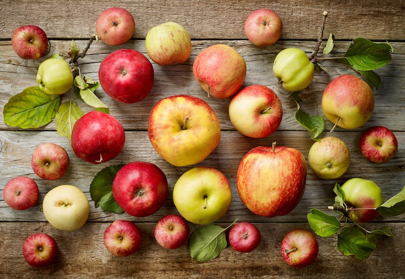
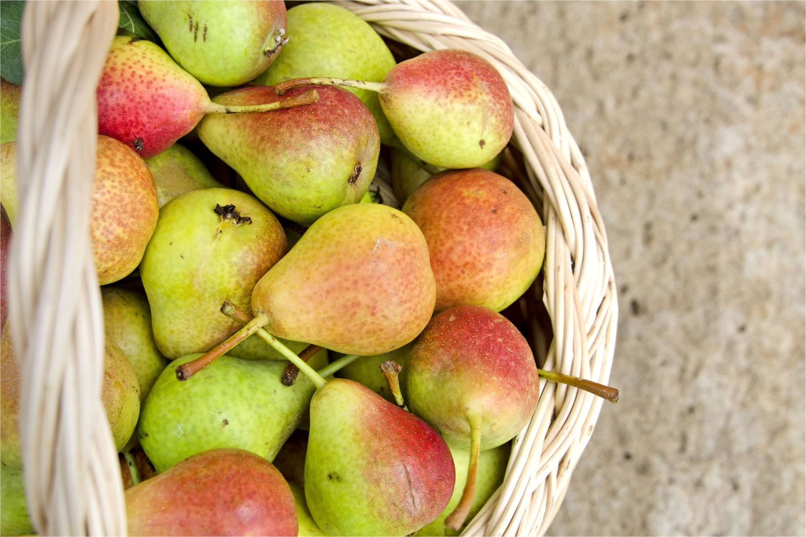
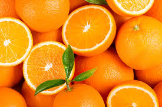

Le nostre offerte invernali!!!

Acquista 1,38 €/Kg
Mela
Che la mela sia il frutto del melo (nome botanico Malus communis) è un dato di fatto ben lontano dal costituire una novità, così come non ci dice nulla di nuovo il vecchio detto secondo cui "una mela al giorno toglie il medico di torno".
Ha un contenuto energetico moderato: una mela comune pesa 242 grammi e fornisce 126 kcal. Nella dieta può essere utilizzata come spuntino, alimento da prima colazione o come chiusura di un pasto principale.
| Mela, valori per 100g | |
|---|---|
| Energia | 52kcal |
| Fibre | 2,4g |
| Carboidrati | 13,81g |
| Grassi | 0,17g |
| Proteine | 0,26g |
| Acqua | 85,56g |
Acquista 1,38 €/Kg

Acquista 1,83 €/Kg
Pera
Le pere sono il frutto, o meglio il falso frutto, di alberi del genere Pyrus, appartenenti alla famiglia delle Rosaceae (sottofamiglia Pomoidee), spontanei nelle zone a clima umido - temperato dell'Europa e dell'Asia.
Le pere appartengono alla categoria della frutta, pertanto le relative porzioni oscillano tra i 200 ed i 600g al dì (1-3 frutti circa); ovviamente si tratta di un discorso molto generico che merita d'essere contestualizzato nel regime calorico specifico, rammentando che - pur trattandosi di un alimento poco energetico - l'eccesso nel consumo condurrebbe inesorabilmente ad uno sbilancio dell'alimentazione complessiva.
| Pera, valori per 100g | |
|---|---|
| Energia | 35kcal |
| Fibre | 3,80g |
| Carboidrati | 8,80g |
| Grassi | 0,10g |
| Proteine | 0,30g |
| Acqua | 87,40g |
Acquista 1,83 €/Kg

Acquista 0,48 €/Kg
Arancia
Ottimo rimedio naturale contro gli stadi d'inappetenza, l'arancia è una vera e propria bomba vitaminica, utilissima non solo per il suo potere antiossidante, ma anche per stimolare l'attività cerebrale, favorire la digestione, alleviare i dolori di stomaco, depurare l'organismo ed assicurare un effetto calmante, a scapito di ansia e stress.
Le arance apportano solo 34 kcal per 100 grammi, pertanto sono indicate nei regimi dietetici che richiedono poche calorie. Per 100 grammi di arancia (parte edibile) sono presenti 87 grammi di acqua, circa 8 grammi di carboidrati, 1,6 di fibre, 0,7 di proteine e pochissimi grassi (0,2 g).
| Arancia, valori per 100g | |
|---|---|
| Energia | 34kcal |
| Fibre | 1,60g |
| Carboidrati | 7,80g |
| Grassi | 0,20g |
| Proteine | 0,70g |
| Acqua | 87,20g |
Acquista 0,48 €/Kg